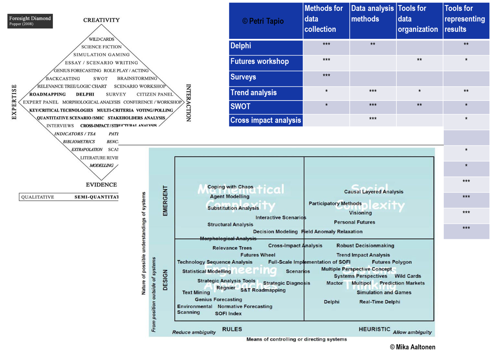

Foresight
We cannot predict the future, but we can learn about and influence it.
Answers about future are not easier than questions. We cannot continue driving by looking at the rear-view window. (M. Willenius) Futures thinking requires different minds than we were taught to develop. Harmonizing the changing outer and inner environments and concentrating on the most important thing is probably the best recipe for success.
Knowledge about possible, plausible and preferable futures helps take better decisions now. But is there any reliable way to know the future? The answer is yes and no. Knowledge about futures can be as reliable or unreliable as knowledge in any other field or about any other subject. Quality of knowledge depends both on the tools and on the hands that hold the tools. For great results, science and art shall go together.
I want us to see more doors
Image by Kyle Bushnell. Unsplash
If we need help with our long-term choices, why invite Lauras Nareiko?
Being a professional futurist, I can help you anticipate how future may unfold and how to influence it. I have worked with cases of extreme uncertainty and complexity.
Knowledge alone does not make a professional. High moral is a vital part of every choice, without which value is not real. A professional futurist acts to 'improve the freedom and welfare of the humankind and of all the living beings, plants and the Earth's biosphere.' (W.Bell)
Finally, beauty of solutions is important for me. Like in mathematics, the best solutions in life are often also the most beautiful ones. And again, like in mathematics, one needs fantasy even more than logic to conceive them. I agree with B. Lotto who put it simply: 'Creativity is another form of logic'. It must be trained and developed.
If you want to get more acquainted with me, check Lauras Nareiko page or contact me using the details below.
What is futures research? And what is foresight?
Futures research is holistic, systematic, multidisciplinary and critical exploration of future development alternatives. (S. Heinonen)
Some people are more familiar with foresight, which is narrower than futures research. Foresight is a structured participatory debate about futures of complex issues. (S. Heinonen) It is generally intuitive, experimental and disruptive, and aims to go beyond what pure logical thinking can inform. (H. Mintzberg) It helps learn the interests of 'others', organize the discussion and decision-making process so as to reach effective and long-lasting results.
How can we learn about (possible, plausible, preferable) futures?
Methods and tools vary in their purpose and suitability for different problems. Here is what a futurist's toolbox may look like:
One method is seldom enough. Usually, a combination of three or more methods is needed, particularly because the results obtained with one method need to be complemented or tested by other methods.
Knowledge about possible, plausible and preferable futures helps take better decisions now. But is there any reliable way to know the future? The answer is yes and no. Knowledge about futures can be as reliable or unreliable as knowledge in any other field or about any other subject. Quality of knowledge depends both on the tools and on the hands that hold the tools. For great results, science and art shall go together.
As an example of how foresight can help in extremely high uncertainty, here are a few slides from my presentation about far-far futures (sometimes called grand futures).
How can we benefit from the knowledge about future?
- Be prepared:
- Develop skills and capabilities: futures consciousness, futures literacy, and futures thinking skill.
- Get information: use scanning and analysis tools, systematically develop and interpret knowledge about future.
- Organize foresight activities and be better prepared as a team, organization or community.
- Act wisely:
- Knowledge about future can be used to attack (seize new opportunities), defend (avoid risks), and create (desirable futures: image + path + test). Relevant activities include, for instance, visioning and strategizing, technology foresight, business / service / product (re)design, etc.
- In addition, many lateral effects can be achieved like improved learning capability (learning from inside and outside of the organization), mental shift in the culture towards future-oriented thinking, increased resilience and risk anticipation capacity, stronger unity around long-term goals. Some typical failures become less common, e.g. partiality and sub-optimal framing, narrow views, too strong reliance on experts, wrong timing, etc.
- Help others:
- Communicate from the futures perspective, unveil the whole picture, lead by example.